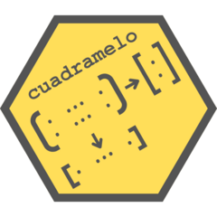

Balance matrix
balance_matrix.RdBalances a matrix so that the columns and/or rows add up to a certain vector.
Details
Balancing is done according to the criteria of minimum sum of squares.
If neither col_totals nor row_totals is given, the same matrix will be
returned. If only one of them is given, only that axis will be
balanced.
Examples
set.seed(2)
Y <- rnorm(3*5) |> matrix(3,5) |> round(3)
v <- c( 0.876, -1.078, 3.452, 0.261, 1.349)
h <- c(-1.851, 0.243, 6.468)
X1 <- balance_matrix(Y, v, h)
Y
#> [,1] [,2] [,3] [,4] [,5]
#> [1,] -0.897 -1.130 0.708 -0.139 -0.393
#> [2,] 0.185 -0.080 -0.240 0.418 -1.040
#> [3,] 1.588 0.132 1.984 0.982 1.782
X1
#> [,1] [,2] [,3] [,4] [,5]
#> [1,] -0.9636667 -1.19666667 0.9746667 -0.539 -0.1263333
#> [2,] 0.3183333 0.05333333 0.2266667 0.218 -0.5733333
#> [3,] 1.5213333 0.06533333 2.2506667 0.582 2.0486667
h
#> [1] -1.851 0.243 6.468
rowSums(X1)
#> [1] -1.851 0.243 6.468
v
#> [1] 0.876 -1.078 3.452 0.261 1.349
colSums(X1)
#> [1] 0.876 -1.078 3.452 0.261 1.349
X3 <- balance_matrix(Y, col_totals = v)
v
#> [1] 0.876 -1.078 3.452 0.261 1.349
colSums(X3)
#> [1] 0.876 -1.078 3.452 0.261 1.349
X4 <- balance_matrix(Y, row_totals = h)
h
#> [1] -1.851 0.243 6.468
rowSums(X4)
#> [1] -1.851 0.243 6.468